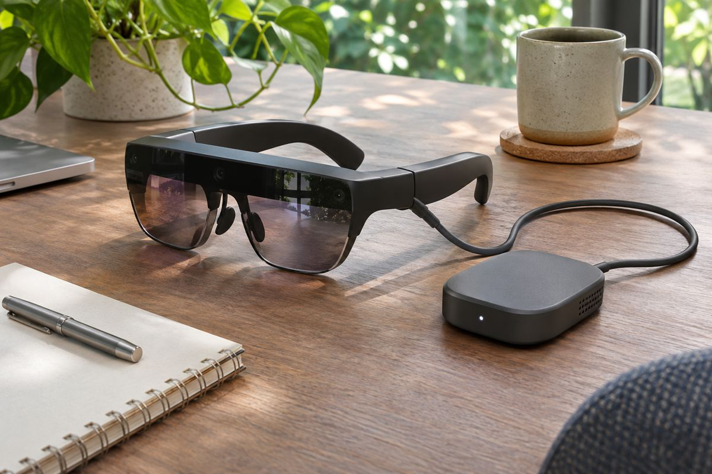

확장현실 / EXPLAINED
XREAL AURA 일본 주문 일정 개시, 유선 Android XR 안경의 조건
Google이 10월 28일 공개한 일정상 일본 주문은 11월 2일 시작된다. 유선 연결과 앱 지원 범위가 실제 활용을 좌우한다.

국가별로 달랐던 주문 시작일
Google은 10월 28일 Android XR 기반 유선 안경 XREAL AURA를 소개했다. 미국·캐나다·한국은 발표 당일 주문을 받고, 일본은 11월 2일부터 주문을 시작하는 일정으로 안내됐다. 오늘 주목할 부분은 일본도 안내된 주문 기간에 들어섰다는 점이다. 주문 접수일과 구매자별 발송일은 구분해야 하며, 실제 재고와 도착 예정일은 현지 판매처 정보에 달려 있다.
안경 형태가 바꾸는 설계
XREAL은 안경형 디스플레이를 만드는 회사이고, AURA에는 Google의 Android XR이 적용된다. XR은 현실 공간에 디지털 화면을 겹치거나 시야 안에서 가상 환경을 경험하는 장치를 아우르는 용어다. 이 모델은 유선이라는 점이 중요하다. 착용부를 작게 느끼더라도 연결 장치와 케이블을 함께 배치해야 한다. 이동하며 짧게 쓰는 상황과 책상에 앉아 긴 시간 보는 상황에서는 같은 설계의 장단점이 다르게 나타난다.
앱이 보이는 것과 공간 기능을 쓰는 것
Google은 일반 Android 앱과 XR에 맞춘 앱을 함께 소개한다. 기존 앱 화면을 시야 안에 띄울 수 있는 것과 여러 공간 창이나 손동작에 맞춰 설계된 경험은 다르다. 앱 목록의 수가 실제로 자주 쓰는 서비스의 입력 방식, 콘텐츠 권한과 연결 기기 조건을 모두 해결하지는 않는다. 구매자는 자신이 사용하는 영상 서비스나 업무 앱이 원하는 방식으로 동작하는지부터 확인할 필요가 있다.
미러링과 기기 자체 실행의 차이
유선 미러링은 다른 장치의 화면을 안경 쪽에 표시하는 방식이다. 작업 파일과 앱을 원래 장치에서 그대로 쓰기 쉽지만 호환되는 출력과 연결 조건이 필요하다. 반대로 안경 시스템에서 앱을 실행하면 조작 방식과 계정 연결이 그 플랫폼의 조건을 따른다. 여행 중 노트북을 대신할 화면을 원하는 사람과, 집에서 영상을 크게 보는 사람에게 필요한 조건이 같지 않다.
직접 비교할 항목
편집부는 이번 제품의 의미를 Android XR을 경험할 수 있는 폼팩터의 확장으로 본다. 화면의 체감 크기나 글자 선명도, 장시간 착용감은 제조사 소개만으로 판단하기 어렵다. 시력 보정 방법, 케이블 배치, 외부 밝기, 자신이 사용할 입력 장치와 앱을 함께 확인하면 구매 목적에 맞는 비교가 가능하다.
화면이 커 보이는 것과 글을 오래 읽는 것
영상 한 편을 볼 때는 시야에서 화면이 차지하는 크기가 우선일 수 있지만, 문서 작업에서는 화면 가장자리의 글자 선명도나 고개를 움직일 때 창의 위치가 편한지가 더 중요할 수 있다. 같은 가상 화면을 두고도 자막을 읽는 사람, 작은 글씨를 편집하는 사람, 화면을 여러 개 띄우는 사람이 보는 조건은 다르다. 케이블이 연결된 상태에서 책상 위 다른 기기를 함께 써야 한다면, 착용부의 크기와 무게만으로 사용 공간을 판단하기는 어렵다.